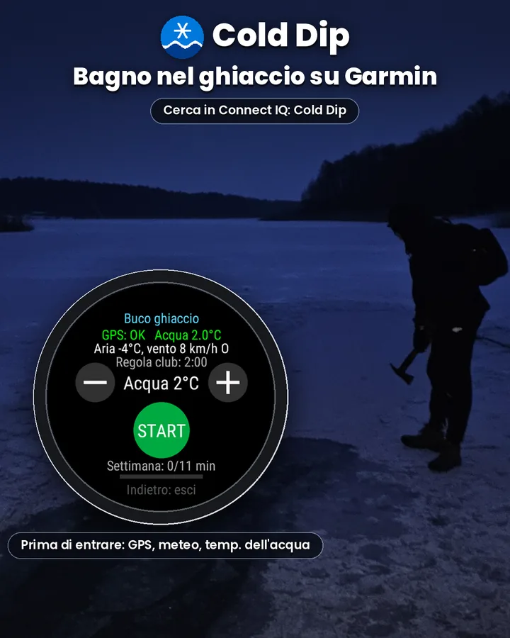
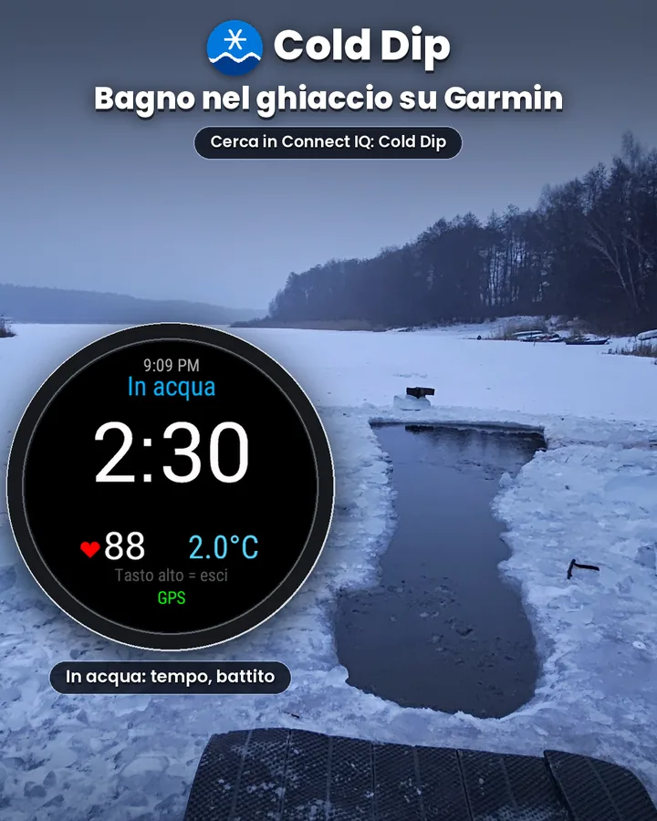
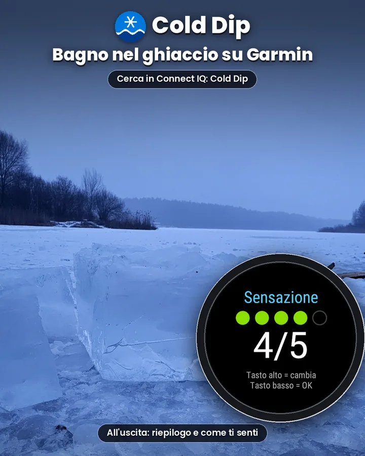

Prima / in acqua / dopo
Il tasto in alto cambia fase. Il tempo in acqua continua semplicemente a scorrere — l'app non ti dice mai di uscire. Lo decidi tu. Il tuo ultimo tempo è solo un punto di riferimento, non un traguardo da battere.
Bagni freddi e nuoto invernale, registrati come si deve — non come un nuoto.
5.0 in Connect IQ · 1000+ download
Oppure cerca “Cold Dip” nell'app Connect IQ sul telefono.



Piattaforme
Cold Dip è già disponibile sugli orologi Garmin. La versione Amazfit (Zepp OS) è in revisione nello Zepp App Store. Le versioni per Huawei, Wear OS e Apple Watch sono in preparazione.
Pensata per un bagno freddo, non per una sessione in piscina. Resti tu al comando per tutto il tempo.
Il tasto in alto cambia fase. Il tempo in acqua continua semplicemente a scorrere — l'app non ti dice mai di uscire. Lo decidi tu. Il tuo ultimo tempo è solo un punto di riferimento, non un traguardo da battere.
La frequenza cardiaca viene registrata per tutta la sessione. La temperatura dell'acqua si inserisce a mano e viene salvata con l'attività.
Temperatura dell'aria, percepita e vento — dalla meteo Garmin sul telefono.
Il luogo dell'ingresso viene salvato e mostrato su una mappa in Garmin Connect.
Dopo ogni ingresso, una valutazione rapida di come ti senti. Anche picco e recupero della frequenza, più Body Battery e stress prima di entrare.
Tutto viene salvato in Garmin Connect come attività a sé, non come un nuoto.
Inglese, polacco, tedesco, ceco, slovacco, finlandese, norvegese, svedese, spagnolo, russo, ucraino, danese, francese, olandese, ungherese, italiano e lituano. L'app segue automaticamente la lingua dell'orologio.
Forerunner, Fenix, Epix, Enduro, Venu, Vivoactive, Instinct 2 / 3 / E / Crossover e altri. Non supportati: orologi molto vecchi come il Forerunner 920XT (Connect IQ 1.x).
Extra facoltativi per l'app gratuita — paghi solo se li vuoi
L'app che usi già resta gratis. Pro è per chi vuole un po' di più dalla stagione: nuovi modi di allenarsi, un quadro più chiaro dei progressi e uno schermo più semplice in acqua.
$4.99 una tantum, IVA aggiuntiva dove prevista · prova gratuita di 7 giorni
Prova Pro gratis per 7 giorni — poi 4,99 $ Prendi l'aggiornamento in Connect IQ
Fai una sauna con l'orologio al polso, fai una doccia fredda, segui un contrasto guidato di sauna e acqua, o fai una breve preparazione del respiro prima di entrare. Confermi sempre un cambio di fase con il tasto.
Fasi nominate e avvisi agli orari che scegli, in aggiunta agli avvisi gratuiti al minuto, a metà e 3-2-1, che restano com'è.
Tempo totale in acqua e in sauna, record di sempre e di stagione (acqua più fredda, ingresso più lungo) e cronologia fino a 200 sessioni. L'elenco gratuito mostra ancora le ultime 30.
Tieni una serie di 7, 14 o 30 giorni e ottieni badge per 10, 25, 50 e 100 sessioni, un primo ingresso sotto i 5°C, una sessione di contrasto e una sauna più un ingresso di fila.
Un grande timer, una pagina di frequenza e giri, e temi (ghiaccio, scuro, alto contrasto, sauna). Cambia pagina con Su e Giù.
Un enorme timer in acqua, temperatura dell'acqua e frequenza cardiaca. Un tasto per avviare e fermare. Niente menu o schermate in più. Attivalo nelle impostazioni dopo aver sbloccato Pro.
Un tempo suggerito in base alla temperatura dell'acqua, secondo una regola di club comune (circa tanti minuti quanti sono i °C dell'acqua, tra 0:30 e 5:00). È solo un suggerimento: l'app non termina mai la sessione e non afferma mai che un tempo è sicuro.
Sui modelli più recenti puoi fissare un glance e delle complicazioni: la serie quotidiana, il tempo dell'ultimo ingresso e i minuti di stagione. Il glance è gratis su quei modelli. Le complicazioni richiedono un quadrante che supporta le complicazioni delle app.
Quando salvi un ingresso, una scheda semplice mostra tempo, temperatura, come ti sei sentito e la serie. Fotografa lo schermo per condividerla. Un elenco cronologico resta sull'orologio, e Garmin Connect riceve comunque l'attività FIT. Non c'è export nel cloud né immagine Instagram — Connect IQ non può inviare foto da solo.
Dopo un ingresso vedi una curva semplice della frequenza, il picco e i valori di recupero a 1 e 2 minuti. È solo un suggerimento, non un parere medico.
Salva un luogo di ingresso con l'ultima temperatura dell'acqua che ci hai registrato. Quando sei nei paraggi, la schermata iniziale può mostrare quell'ultima visita. Non è una temperatura del lago in tempo reale — Connect IQ non ha un'API per la temperatura dell'acqua.
Se lasci l'orologio fuori perché non si surriscaldi, attiva l'opzione: l'app non aspetterà la frequenza al polso in sauna e potrà avviare una fase di riscaldamento dopo. Puoi anche avviare il riscaldamento dopo un ingresso dal menu.
| Cosa è incluso | Gratis | Pro ⭐ PRO |
|---|---|---|
| Tutto ciò che è già in Cold Dip 1.0.3 — quattro profili, cronologia di 30, respiro guidato, GPS e altro | ✓ Sì | ✓ Sì |
| Sauna, contrasto e nuove modalità ⭐ PRO | — | ✓ Sì |
| I tuoi avvisi in acqua ⭐ PRO | — | ✓ Sì |
| Vedi tutta la stagione ⭐ PRO | — | ✓ Sì |
| Record di sempre e di stagione — acqua più fredda, ingresso più lungo ⭐ PRO | — | ✓ Sì |
| Badge e serie giornaliere ⭐ PRO | — | ✓ Sì |
| Schermate extra e temi colore ⭐ PRO | — | ✓ Sì |
| Modalità semplice, pensata per i guanti ⭐ PRO | — | ✓ Sì |
| Un suggerimento di tempo — non un limite ⭐ PRO | — | ✓ Sì |
| Complicazioni Glance e quadrante (orologi più recenti) | Sui modelli più recenti | Sui modelli più recenti |
| Scheda sessione ed elenco cronologia ⭐ PRO | — | ✓ Sì |
| Grafico di frequenza e recupero ⭐ PRO | — | ✓ Sì |
| Luoghi salvati con l'ultima temperatura dell'acqua ⭐ PRO | — | ✓ Sì |
| Orologio fuori dalla sauna e riscaldamento ⭐ PRO | — | ✓ Sì |
| Prezzo | Gratis | Prova di 7 giorni, poi 4,99 $ una tantum |
Pro gira sugli orologi Garmin più recenti con Connect IQ 4 o successivo, tra cui Venu 2 / 3 / 4, Venu Sq 2, Venu X1, vívoactive 5 / 6, Forerunner 165 / 170 / 255 / 265 / 570 / 955 / 965 / 970, fēnix 7 / 8 / 9, epix (Gen 2), Instinct 3 AMOLED, Descent Mk3, Enduro 3 / 4, Approach S50 / S70 / S72 e MARQ (Gen 2) / (Gen 3). Non gira su modelli più vecchi o con poca memoria come fēnix 5 / 6, la prima Venu, vívoactive 3 / 4, Forerunner 55 / 245 / 645 / 945, Instinct 2, Instinct 3 Solar o Instinct E — l'app gratuita continua a funzionare su quelli. Controlla il tuo modello nell'elenco.
In Garmin Connect una sessione in sauna viene salvata come allenamento o meditazione, perché Garmin non ha un tipo di attività «sauna».
Il suggerimento di tempo non è un parere medico e non significa che una sessione sia sicura. Acqua fredda e sauna comportano dei rischi. Consulta un medico, non entrare mai da solo e usa il tuo giudizio. Resti tu al comando per tutto il tempo.
Cerca il tuo modello. L'elenco corrisponde ai 133 orologi di Cold Dip.
Gli orologi Connect IQ 1.x molto vecchi, come il Forerunner 920XT, non possono essere supportati. Pro richiede un orologio più recente — cerca il tuo modello per vedere se è incluso.
Quadranti
Quadranti per il nuoto invernale, compresi i quadranti di stagione che ottieni con gli ingressi in Cold Dip. Mors – tarcza cambia con il meteo. Mors Level cresce con i minuti di stagione. Dip Goals e Afterdrop arrivano presto.
Stagione 2026/2027
Sono gratis — non puoi comprarli. Li sblocchi solo con gli ingressi nell'app gratuita Cold Dip.
15 ingressi in una stagione. Codice MK.
50 ingressi in una stagione. Codice MZ. Scegli Król o Posejdon.
Senza il rango, il quadrante mostra solo l'ora e la data. Il codice funziona solo sul tuo orologio.
Come sbloccare


Quadrante animato con tricheco per nuotatori invernali
$3.99 Prova gratuita di 24 ore
Presto nel Connect IQ Store Prendilo in Connect IQ Vedi di più
Quadrante ludico con tricheco per i bagni freddi
$2.99 Prova gratuita di 7 giorni
Presto nel Connect IQ Store Prendilo in Connect IQ Vedi di più

Anelli obiettivo per gli ingressi settimanali, i minuti di stagione e la serie, più temperatura dell'acqua e dell'aria, Body Battery e frequenza cardiaca. Quattro temi.

Un quadrante Garmin gratuito con un'ora grande e 3 campi dati. Non si blocca mai. Afterdrop Pro, facoltativo, sblocca i campi Cold Dip, la temperatura dell'aria, alba e tramonto, e 4 temi in più.
Quadrante animato con tricheco per nuotatori invernali
Il tricheco reagisce al meteo: onde con bel tempo, si mette il berretto col gelo, scuote la neve e salta nel buco nel ghiaccio quando è ora di entrare. Ora, data, temperatura dell'aria, meteo, frequenza cardiaca, passi e batteria. L'animazione si riproduce quando svegli l'orologio — mai in modalità always-on.
$3.99 una tantum, IVA aggiuntiva dove prevista
Sugli orologi AMOLED il tricheco si muove quando alzi il polso — mai in modalità always-on.
Animazione a colori su orologi AMOLED come Venu 2, 2 Plus, 3 e 4, vívoactive 5 e 6, Forerunner 165, 170, 265, 570, 965 e 970, Fenix 8 e 9 (AMOLED), Epix 2, Descent Mk3, D2 Mach, Approach S70 e S72, Instinct 3 AMOLED e MARQ 2 e 3.
Questo quadrante non è disponibile su orologi MIP o con poca memoria come Fenix 5 Plus, Fenix 6 e 7, Fenix Solar, Forerunner 245, 255, 745, 945 e 955, Enduro, Descent Mk2, vívoactive 4, Venu 1 e MARQ di prima generazione. Quegli schermi non possono mostrare l'animazione a colori.
Quadrante ludico con tricheco per i bagni freddi
Il tuo tricheco compagno sale di livello in 5 tappe man mano che crescono i minuti in acqua fredda della stagione — sincronizzato in diretta dall'app gratuita Cold Dip. Un buco nel ghiaccio fumante in inverno, una spiaggia in estate, un badge di serie di giorni, temperatura dell'acqua, frequenza cardiaca, batteria e un display always-on pulito. L'animazione al risveglio si riproduce quando svegli l'orologio — mai in modalità always-on.
$2.99 una tantum, IVA aggiuntiva dove prevista · prova gratuita di 7 giorni
Per salire di livello con minuti in diretta, serie e temperatura dell'acqua, installa la Cold Dip app gratuita. Senza di essa, quei campi mostrano semplicemente i dati dell'orologio.
NOVICE 1/5


5 levels
1/5
0–29 min in questa stagione
2/5
30–119 min in questa stagione
3/5
120–299 min in questa stagione
4/5
300–599 min in questa stagione
5/5
600+ min in questa stagione


Animazione a colori su 51 orologi AMOLED come Venu 2, 2 Plus, 3 e 4, vívoactive 5 e 6, Forerunner 165, 170, 265, 570, 965 e 970, Fenix 8 e 9 (AMOLED), Epix 2, Descent Mk3, D2 Mach, Approach S70 e S72, Instinct 3 AMOLED e MARQ 2 e 3. L'always-on accende pochissimi pixel.
Un quadrante chiaro e statico su 19 orologi MIP come Fenix 7, Fenix 8 Solar, Forerunner 255 e 955, e Enduro 3 e 4. In totale Mors Level supporta 70 orologi Garmin, in 11 lingue.
Valutazione media 5,0 ★ nel Connect IQ Store e oltre 1000 download.
★★★★★
„Super, pierwsze morsowanie z apką za mną, działa! Tego mi było trzeba! Dzięki”
Super, il mio primo bagno con l'app è fatto, funziona! Proprio quello che mi serviva! Grazie (Tradotto dal polacco)
★★★★★
„Rewelacyjna apka. Przetestowana podczas morsowania. Wszystko działa dobrze”
App eccezionale. Provata durante un bagno invernale. Tutto funziona bene (Tradotto dal polacco)
★★★★★
„Działa nawet na starszym Garminie za co duże brawa dla autora”
Funziona anche su un Garmin più vecchio — un grande applauso all'autore (Tradotto dal polacco)
★★★★★
„Świetna sprawa!💙”
Ottima cosa!💙 (Tradotto dal polacco)
Un ingresso dall'avvio al salvataggio — schermi veri del simulatore Garmin.


Versioni recenti di Cold Dip.
I ranghi sono gratis e solo per divertimento — nessuno gareggia con nessuno: Pinguino (1), Foca (5, 7 giorni di Pro gratis), Tricheco guerrigliero (15, un codice per il quadrante Mors Komandos 2026/2027), Tricheco veterano (30, −30% su Mors Level / Dip Goals, codici in arrivo) e Tricheco leggenda (50, un codice per un quadrante oro a scelta: Mors Legenda Król 2026/2027 o Mors Legenda Posejdon 2026/2027). Al massimo un ingresso al giorno conta (stagione 1 ottobre – 30 aprile), e una sessione solo in sauna non conta. Sono tre quadranti di stagione distinti, in arrivo nel Connect IQ Store, gratis da installare: ottienili con un rango in Cold Dip. Non sono nei pacchetti da $5.99 / $7.99, e ogni stagione arrivano nuovi quadranti.
Tutti i record — acqua più fredda e ingresso più lungo, di sempre e in questa stagione — fanno ora parte di Pro. Continuano a essere salvati per tutti, e l'app gratuita mostra “Nuovo record! Vedi in Pro”. Dopo il terzo ingresso compare una richiesta unica di valutazione. Cronometraggio, frequenza cardiaca e salvataggio in Garmin Connect restano gratis. Sugli orologi più vecchi e in bianco e nero senza Pro i record restano gratis.
La temperatura dell'acqua si può ora impostare sotto 0°C.
La temperatura dell'acqua inserita dopo l'uscita si applica ora solo a quella sessione. La richiesta ignora una pressione accidentale subito dopo l'uscita. Più solido: memoria piena o un errore di salvataggio non bloccano più l'app, e un campo o uno sport non supportato su un orologio più vecchio non ferma più l'avvio. Corretti i consigli di riscaldamento in polacco e russo.
Corretto un blocco circa 20 secondi dopo il salvataggio di una sessione (segnalato su Venu 3S). Dopo essere uscito, l'orologio chiede la temperatura dell'acqua; è gratis e si può disattivare nelle impostazioni.
Cold Dip Pro è arrivato. Tutto ciò che c'era in 1.0.3 resta gratis. Pro è facoltativo: sblocco una tantum a 4,99 $, con prova gratuita di 7 giorni. Nuove modalità: sauna, doccia fredda, contrasto guidato e preparazione del respiro; avvisi personalizzati e fasi nominate in acqua; statistiche di stagione, badge e serie giornaliere (7 / 14 / 30); schermate extra, temi colore e modalità semplice.
133 orologi, tra cui Instinct 2, Instinct 2S, Instinct 2X, Instinct 3 Solar, Instinct E e Instinct Crossover, più un nuovo layout in bianco e nero per gli schermi MIP.
126 orologi, tra cui il Forerunner 55.
105 orologi, tra cui layout rettangolari per Venu X1 e Venu Sq 2.
Prima versione.
“Działa idealnie” (Funziona alla perfezione)
Un ingresso di oltre 10 minuti a 5°C — temperatura dell'acqua sull'orologio, e tutti i dati salvati in Garmin Connect.
Alcune cose che le persone chiedono spesso dopo l'installazione.
Installala dall'app Connect IQ Store sul telefono — non da Google Play o dall'App Store. Sull'orologio trovi Cold Dip nell'elenco attività / app.
Nel profilo “Buco nel ghiaccio” usa i tasti − / + nella schermata iniziale. Negli altri profili impostala dal menu: “Temp. acqua manuale”. Se in acqua vedi “--°C”, la temperatura non è ancora stata impostata.
Apri l'attività, vai alla scheda Statistiche e scorri fino alla sezione “Connect IQ”. Frequenza cardiaca, temperatura dell'acqua, meteo, come ti sei sentito e i tempi delle fasi sono tutti lì. I riquadri della schermata Panoramica li imposta Garmin — l'app non può modificarli.
No. L'orologio non può misurare la temperatura corporea. Il sensore legge la temperatura dell'orologio stesso, influenzata dalla pelle e dall'aria. In Cold Dip la temperatura dell'acqua si inserisce a mano.
Le calorie le stima l'orologio dalla frequenza cardiaca, non le calcola Cold Dip.
Sì. La registrazione gira sull'orologio, quindi il telefono può restare in borsa. Senza il telefono perdi solo il meteo, perché arriva dalla meteo Garmin sul telefono. L'attività si sincronizza con Garmin Connect la volta successiva in cui l'orologio si collega al telefono. Ti serve il telefono per installare l'app e per sbloccare Pro.
L'orologio non può misurare da solo la temperatura dell'acqua — il sensore integrato legge l'orologio, scaldato dalla pelle e dall'aria. In Cold Dip imposti la temperatura dell'acqua con − / + (o dal menu), e dopo essere uscito l'app te la chiede. Se hai un sensore Garmin Tempe accoppiato, l'app usa quella lettura. Il sensore dell'orologio e la temperatura dell'aria non vengono mai fatti passare per temperatura dell'acqua.
Pro è facoltativo e l'app resta gratis. Pro aggiunge sauna, doccia fredda, contrasto guidato e preparazione del respiro, avvisi personalizzati, statistiche di stagione, record di sempre e di stagione (acqua più fredda, ingresso più lungo), badge e serie giornaliere, schermate extra e temi, una modalità semplice pensata per i guanti, un suggerimento di tempo in base alla temperatura dell'acqua (un suggerimento, mai un limite) e un grafico della frequenza. Costa 4,99 $ una tantum dopo una prova gratuita di 7 giorni. Vedi tutte le funzioni Pro.
I pagamenti passano da KiezelPay. Quando vuoi tenere Pro, l'orologio mostra un codice a 6 cifre. Inseriscilo su kzl.io/cold-dip-pro (per i quadranti a pagamento: kzl.io/code) e paga una tantum. Tieni il telefono vicino, con Garmin Connect e il Bluetooth accesi — l'orologio si sblocca tramite quella connessione, di solito entro 5 minuti.
Oltre 130 orologi Garmin con Connect IQ: Forerunner, fēnix, epix, Enduro, Venu, vívoactive, Instinct 2 / 3 / E / Crossover e altri. Pro richiede Connect IQ 4 o successivo. I modelli molto vecchi come il Forerunner 920XT non sono supportati. Controlla il tuo modello.
Una versione per Amazfit (Zepp OS) è pronta e in attesa di revisione nello Zepp App Store. Le versioni per Huawei, Wear OS (Samsung Galaxy Watch, Pixel Watch) e Apple Watch sono in preparazione — niente date per ora. Ricevi un avviso.
L'acqua fredda è una cosa seria. Sono promemoria di sicurezza generali, non un parere medico. Decidi tu quando entrare e quando uscire.
Vai sempre con qualcuno che possa aiutarti se hai un problema, o assicurati che qualcuno sulla riva ti stia guardando.
Se sei all'inizio con l'acqua fredda, abituati poco alla volta invece di partire con un ingresso lungo in acqua molto fredda.
Molti iniziano con poco tempo in acqua e aumentano piano. Non c'è un tempo che “devi” resistere.
Esci dall'acqua appena senti che è il momento — brividi forti, dolore, intorpidimento, confusione, o semplicemente la sensazione che basti. Cold Dip non ti dice mai di uscire e non imposta mai un tempo da battere. Il tuo ultimo tempo è solo un riferimento.
Asciugati e riscalda il prima possibile dopo essere uscito. Tieni i vestiti caldi pronti prima di entrare.
Dopo essere uscito, la temperatura del nucleo può continuare a scendere per un po', mentre il sangue più freddo torna da pelle e arti. Spesso si chiama afterdrop. Continua a riscaldarti, prendila con calma e aspetta di sentirti bene prima di guidare o andare in bici.
Cold Dip è un'app di registrazione, non un dispositivo medico, e non dà pareri medici. Non può dirti se è sicuro per te entrare in acqua fredda. Se hai una condizione di salute, sei in gravidanza o sei incerto, parla prima con un professionista qualificato.
Letture brevi e pratiche di un nuotatore invernale. Consigli generali, non un parere medico.
Una regola pratica popolare dei club in base alla temperatura dell'acqua — e perché non è un limite sicuro.
Perché puoi sentire più freddo dopo essere uscito, e come riscaldarti con calma.
Primi ingressi passo dopo passo: compagnia, tempi brevi, vestiti caldi pronti.
Uno sguardo breve a un ingresso, dalla schermata iniziale al salvataggio in Garmin Connect.
Cold Dip sta arrivando su altri orologi. Lascia la tua e-mail e scegli l'orologio — ti scriverò una volta, quando quella versione sarà pronta.
Conservo il tuo indirizzo solo per inviarti questo messaggio. Niente newsletter. Scrivimi e lo cancello. Preferisci una e-mail normale? lukasz.pszenny@gmail.com
Gestisci un gruppo, un club o una pagina di nuoto invernale? Sentiti libero di condividere Cold Dip con i tuoi membri. È gratis, e le grafiche e il testo qui sotto sono pronti da pubblicare.
Scrivimi e il tuo club riceverà un proprio codice sconto Pro per i membri.
Per lo spogliatoio, la sauna o la bacheca del club. Il codice QR porta a questo sito.
Un quadrante Garmin con il logo del tuo club, realizzato su richiesta. Dimmi cosa hai in mente.
Hai un'idea per un'app o un quadrante Garmin? Scrivimi e dimmi quale orologio usi.
Se usi già Cold Dip, una recensione in Connect IQ aiuta tantissimo — grazie!
Cold Dip è gratis. Se ti aiuta con i bagni, puoi sostenere il lavoro che c'è dietro.
Offrimi un caffè